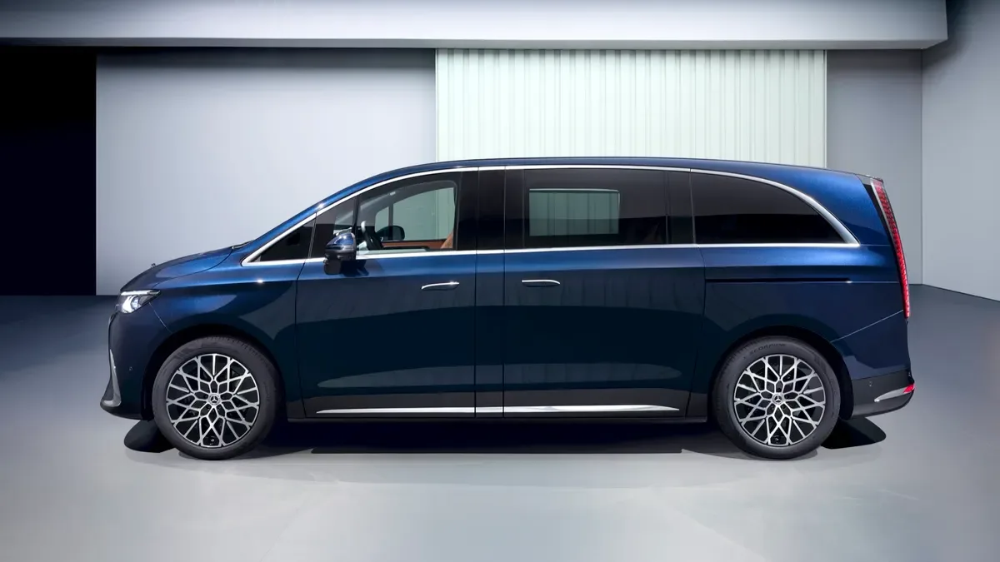
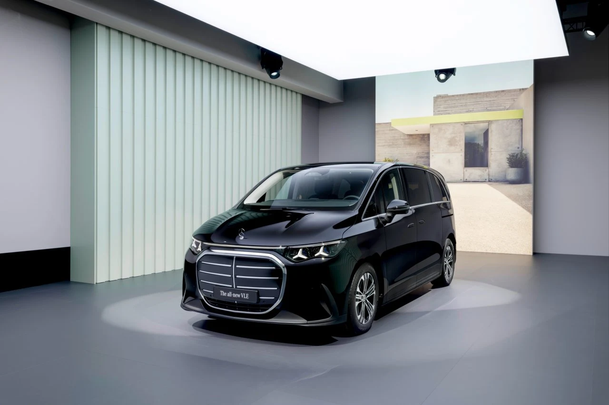

▲ 벤츠의 새로운 전동화 미니밴 VLE. 라인업 확대로 5인승부터 8인승까지 좌석 구성을 고를 수 있게 됐다 ⓒ Mercedes-Benz
"미니밴은 이제 그만 타야 하나" 싶었던 사람들에게 벤츠가 던진 대답은 의외로 명쾌했습니다. 지난 3월 독일 슈투트가르트에서 세계 최초 공개된 전기 MPV 'VLE'가 최근 좌석 구성을 5인승에서 최대 8인승까지 넓히고, AMG 라인을 포함한 신규 트림을 추가하며 라인업을 본격적으로 확장했습니다. V클래스의 전동화 후속 성격을 지닌 VLE는 벤츠가 새로 개발한 모듈형·확장형 밴 전용 아키텍처를 처음 적용한 차종으로, 벤츠는 이 차를 '그랜드 리무진'이라는 새로운 세그먼트로 규정하고 있습니다.
1. 5인승에서 8인승까지 — '롤 앤 고' 시트로 좌석 확장

▲ 측면에서 보면 슬라이딩 도어와 낮고 긴 실루엣이 기존 V클래스와는 다른 승용 지향적 비례를 보여준다 ⓒ Mercedes-Benz
공개 초기 VLE는 리무진에 가까운 5인승 구성이 중심이었지만, 이번 라인업 확대를 통해 벤츠는 6인승·7인승을 거쳐 최대 8인승까지 선택할 수 있도록 옵션을 넓혔습니다. 2열과 3열 좌석은 바닥 레일을 따라 앞뒤로 이동하거나 아예 분리할 수 있는 '롤 앤 고' 방식이 적용됐는데, 좌석 하단에 바퀴가 내장돼 있어 좌석 하나(약 27kg)를 내린 뒤 굴려서 옮길 수 있습니다. 덕분에 승객 6명을 태우다가도 자전거나 서핑보드를 실을 수 있는 화물 공간으로 손쉽게 바꿀 수 있다는 게 벤츠 측 설명입니다.
2. AMG 라인부터 그랜드 컴포트 시트까지 — 늘어난 트림

▲ 공개 행사장에 전시된 VLE. 나이트 패키지를 적용하면 이런 짙은 톤의 마감을 고를 수 있다 ⓒ Mercedes-Benz
트림 구성도 함께 늘었습니다. 기존 스탠더드·익스클루시브 라인에 더해 스포티한 외관을 강조한 'AMG 라인'과, 21인치 트윈스포크 휠과 레드 스티치 시트 등을 갖춘 플래그십 격 'AMG 라인 플러스'가 신규로 추가됐습니다. 여기에 광택 블랙·다크 크롬 마감을 더하는 '나이트 패키지'도 옵션으로 제공됩니다. 시트 자체도 수동 조절 컴포트 시트, 전동식 프리미엄 컴포트 시트, 마사지 기능과 전동 다리 받침까지 갖춘 최상위 '그랜드 컴포트' 시트로 나뉘며, 전동 시트는 센터 디스플레이나 스마트폰 앱으로 원격 조절도 가능합니다.
3. 배터리·충전·주행거리 — 700km 넘게 달리는 전기 미니밴
VLE의 근간은 115kWh 용량의 니켈·망간·코발트(NMC) 배터리와 800V 고전압 아키텍처입니다. 기본형인 VLE 300은 전기 모터 하나로 후륜을 굴리며 최고출력은 약 268~276마력 수준으로 알려졌고, WLTP 기준 1회 충전 주행가능거리는 700km를 넘깁니다. 급속충전 인프라에서는 최대 300kW급 충전이 가능해, 15분 충전만으로 약 355km에 해당하는 전력을 보충할 수 있습니다. 사륜구동 버전인 VLE 400 4매틱은 모터 두 개를 얹어 400마력 안팎의 출력을 내는 대신 주행거리는 다소 줄어드는 것으로 전해집니다.
| 항목 | 내용 |
|---|---|
| 구동방식 | 후륜구동(RWD) |
| 배터리 | 115kWh(NMC) |
| 전기 아키텍처 | 800V |
| 급속충전 | 최대 300kW급, 15분 충전 시 약 355km 주행분 충전 |
| WLTP 주행거리 | 700km 이상 |
| 좌석 구성 | 5~8인승(라인업별 상이) |
VLE는 기존 V클래스가 상용밴 이미지에 가까웠던 것과 달리, 처음부터 승용 지향의 '그랜드 리무진'을 표방하며 개발된 차종입니다. 좌석 구성과 트림을 넓힌 이번 확대는 카니발 등 경쟁 미니밴은 물론, 프라이빗 이동 수요가 있는 고급 승용 시장까지 겨냥한 행보로 풀이됩니다. 다만 국내 도입 시점과 트림·가격 정책은 아직 공개되지 않은 만큼, 확정 정보는 추가 발표를 통해 확인이 필요합니다.